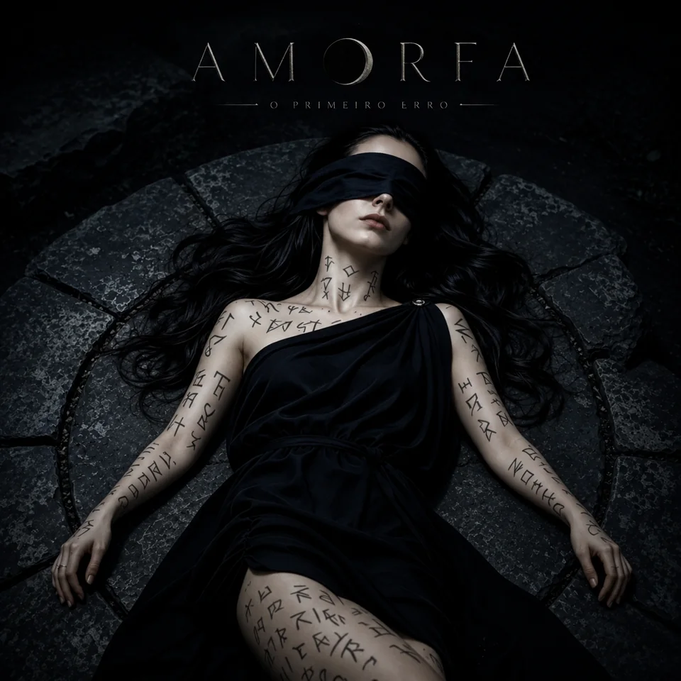

lançamento
Erro de Cálculo
Fé antiga, desejo ritual e primeiro erro.
Erro de Cálculo aproxima a AMORFA do rock gótico: fé antiga, colapso, desejo ritual, altar e cálculo afetivo falhando em público.
tracklist
Faixas
- 01Quem Escapou?
- 02Primeiro Culto Carnal
- 03Erro de Cálculo
- 04Amor Com Dentes
- 05Antiga Fé
- 06Ritual de Fogo
- 07Metade Errada
- 08Na Tela Preta
- 09Dano em Âmbar
- 10Até na Morte
- 11Menos Eu
- 12Fora de Horário
- 13Como Se Fôssemos uma Banda Que Nunca Soube Ficar (Bônus)